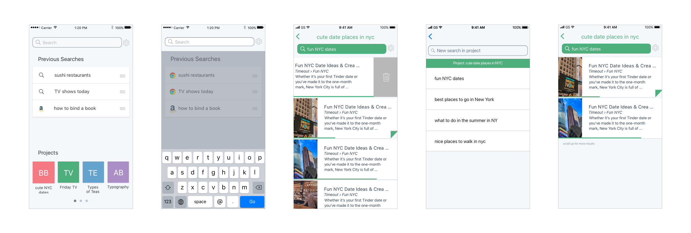

Bento Browser works with people as they browse online to break down information into chewable bites.These can be restructured and repurposed later on to provide a more seamless online experience. This allows users to better understand the knowledge thrown at them and build frameworks that collaborate with their own mental models.
Project Goal: To create a more intuitive and better structured web browsing experience in the context of complex queries and projects.
The video to the left demonstrates our latest prototype for a Chrome extension, showing the relationships between projects, categorized links, and yet-uncategorized content. It is simple to add current tabs into a project to keep for long-term use, and the notes on the right side allow for easy access and quick use.
One of the biggest challenges we ran into a few months into the project was a disconnect between the file structures of the mobile and desktop versions. People inherently use their phones and computers differently. While the mobile application's entire structure is made up of search queries, people using their computers are much more likely to go directly to web pages.
When looking something up, regardless of how many results are displayed, people aren't likely to go past the first five or six results. After spending time reading through their selection of articles, they are even less likely to need more than two or three of the results of their initial query.